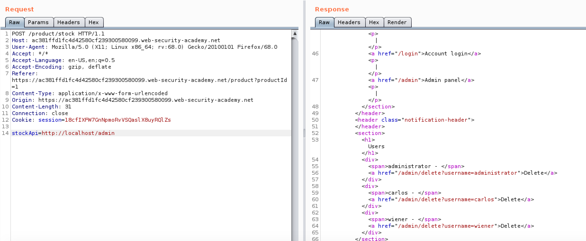

SSRF - Location and Exploitation
Server Side Request Forgery (SSRF) is an exploit that allows an attacker to make arbitrary HTTP requests from the web server. These could be to access an internal network or to reach out to a malicious site, essentially turning the web server into a proxy server.
How to find SSRF
SSRF’s should be checked for in any url parameters that contain any links or domain names especially FQDNs, in a similar way to Open Redirects.
Types of SSRF
Against the server itself
In this case an SSRF is exploited to read web pages on the server that would normally be forbidden. This works as the HTTP request comes from the web server rather than the client. The image below is taken from the Portswigger Web Academy labs and shows a request to the server itself to access the previously blocked page /admin. The original API address in the data of the POST request has been replaced with a request to the admin page on the local host.

SSRF to Internal Private Network
As you are able to control the HTTP requests of the web server that means you able to access any private networks it is connected to and can therefore reach any back end servers that have HTTP access.
The image below shows burp intruder scanning through the private network via SSRF in order to locate any other hosts that are up.
As well as finding open hosts on the network a similar effect can be achieved looking for open ports on those hosts. Simply add the port number to the burp intruder scan and look for some common HTTP ports on any open hosts you find.
Blind SSRF
Like other blind attacks a blind SSRF is one that provides no obvious feedback in the HTTP response. An example of this would be an SSRF in the Referer header that could be accessed at a later date by the system logging where sites are referred from. This does limit you to connecting to your own malicious site rather then other systems on the network so is generally not as serious but can still cause issues depending on what you hot on your site.
SSRF By Other Means
SSRF Through XXE
One of the main way to exploit XXE is by embedding an SSRF in it. For more details on this see my previous post on XXE
SSRF Through Open Redirect
One way to exploit an SSRF is via an Open Redirect vulnerability, where instead of pointing it at an external resource you point it at an internal one the same as an SSRF.
Bypassing Filters
Blacklisting Bypass
A blacklist on the site will block certain strnigs or chars. I have a list on my GitHub where I have a list of possible bypasses to try in order to reach the local host but obviously these can be adapted to suit whatever it is you are trying to access.
Whitelisting Bypass
A white list on the other hand will only allow submissions that contain certain strings. The key here is to include the expected domain as well as malicious one. Again on my Github I have a wordlist to attempt to circumvent these. It is set up for the local host but can be adapted for any. Some will only work if you are pointing it to a site you control.
SSRF from XSS
@georgeomnet posted an example of how to escalate an XSS to SSRF on a site if it uses caching:
< esi:include src=”http ://site.com/capture” />
Disclaimer
As with all of these types of techniques these methods should only be used against systems you own or those you have express and written permission of the owner to test. It is illegal to use these techniques on systems in other cases.
Conclusion
This article has covered the basics of SSRF but like most web vulns there are always new tricks and traps coming out. I will be updating this blog as I discover more info so check back another time.
Any comments, resource suggestions or questions please contact me on twitter at the link at the top of the page.

Subscribe to Hacker Street
Get the latest posts delivered right to your inbox